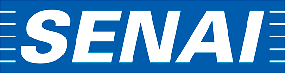
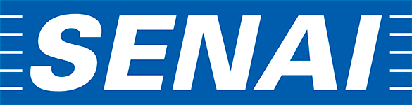

Feita por mulheres para mulheres.
Aceleramos negócios femininos gerando impacto do zero ao e-commerce.
Conheça nossos programasQuem Somos
Uma aceleradora de negócios femininos atuando como ferramenta de autonomia no ON e OFF, gerando consciência do poder das mulheres na Economia. Geramos autonomia e democratizamos o acesso ao digital para empreendedoras, enquanto empoderamos comunidades femininas de impacto.
Nossos Valores
Desenvolvimento, Conexão, Colaboração, Pluraridade, Autonomia, Poder de Rede, Geração de Impacto.
Somos uma empresa pautada nos Objetivos de Desenvolvimento Sustentáveis da Agenda da ONU - Organização das Nações Unidas.
ODS 4:
Oferecemos educação de qualidade para capacitar empreendedoras a atingir seu potencial máximo
ODS 5:
Promovemos a igualdade de gênero, capacitando empreendedoras para ampliar suas vozes no mundo dos negócios.
ODS 8:
Impulsionamos oportunidades econômicas para mulheres empreendedoras, criando um impacto positivo no mercado e na sociedade.
PRODUTOS
Trêsbê Delas
Educação Digital
Será uma escola 100% online, focada em auxiliar no desenvolvimento de habilidades empreendedoras,
digitais, e soft skills que te tornarão uma grande profissional e empresaria e gestora do
futuro.
EM BREVE.
Trêsbê Delas
Shopping
Elas vendem e todos compram. Um marketplace escola que vai te ensinar o passo a passo para
alavancar sua loja online.
EM BREVE.
PROGRAMAS
Acelera
Mei Mulher
Programa de aceleração para micro e pequenas empreendedoras desenvolverem suas habilidades de gestão, fortalecerem a mentalidade de empresária e entenderem sua força no desenvolvimento da economia brasileira.
Acelera
Open Future
Programa de orientação profissional futurista, que auxilia jovens a desenvolverem soft skills necessários para suas carreiras no mercado 4.0.
Acelera
Gestores
Um programa de aceleração para gestores públicos e privados conhecerem a agenda 2030 da ONU, entenderem 17 ODS's, desenvolverem governança com foco em ESG e criar e acompanhar esses indicadores.
Eventos
Organização full de eventos como: maratona de inovação, hackathons, conferências e eventos inovadores sob demanda, incluindo curadoria de conteúdo e palestrantes.
Palestras e Trilhas
Palestras e trilhas sob demanda nas áreas: gestão, digitalização, empreendedorismo feminino, comunicação, soft skills e autoconhecimento.
Time TrêsBê Delas:
Founders
Thayane Belchior, nossa CEO, e Dani Bezerra, COO da TrêsBê Delas. Perfis diversos e complementares aplicados ao alinhamento de propósito da TrêsBê Delas, com o intuito de transformar as comuns em extraordinárias. Dani e Thayane estão juntas desde 2016 e empreendem a TrêsBê Delas desde 2019. Juntas já impactaram +10K mulheres em 15 estados brasileiros através de eventos, palestras, maratonas e ações no OFF e no ON.
Faça parte do time TrêsBê DelasBorboletário
A TrêsBê é um espaço de acolhimento, crescimento e transformação para mulheres empreendedoras. Celebramos e fomentamos a diversidade das mulheres que fazem parte do nosso ecossistema, reconhecendo que todas elas compartilham um objetivo em comum: a transformação. Ninguém sai da TrêsBê da mesma forma como entrou; saem como versões mais poderosas de si mesmas. Por isso, nosso Borboletário é o um epicentro da inovação e empreendedorismo feminismo, um espaço onde mulheres inspiradoras se reúnem para evoluir constantemente e capacitar umas às outras a alcançar seu pleno potencial.
Conheça nosso Ecossistema
- Crisálidas: No coração de nosso borboletário, temos as Crisálidas, representando o estágio inicial de vida da borboleta, um período de casulo e metamorfose. Aqui, aceleramos empreendedoras em processo de transformação, que aspiram a alçar voos altos como borboletas plenas.
- Imagos: Como o estágio adulto da borboleta, as Imagos são as líderes do nosso ecossistema. Elas formam um time sólido na área de educação empreendedora, conduzindo aulas e compartilhando conhecimento. A diversidade é nossa força, refletida na multiplicidade de perfis que cada Imago representa.
- Polinizadoras (Polis): Nossas Polinizadoras são as multiplicadoras, treinadas na metodologia única da TrêsBê. São responsáveis pelo crescimento vigoroso de nossa rede de mulheres empreendedoras, disseminando conhecimento e inspiração.
- Flambeau: Na linha de frente comercial, temos as Flambeau, desenvolvedores de vendas astutas e capacitadas. São elas quem abrem portas comerciais para a TrêsBê, impulsionando nossa presença e impacto no mercado.
- Monarca (Bê's): E, por fim, as Monarcas, representadas por nossas fundadoras Thay e Dani. Como uma das borboletas mais rápidas que existem, a Monarca personifica a essência do propósito da TrêsBê: fortalecer o empreendedorismo feminino e acelerar mulheres em todo o mundo. Elas são as líderes visionárias que guiam nosso voo, inspirando a transformação e a inovação constante em nosso ecossistema.
Conheça a missão de cada uma das nossas frentes
Vivendo a metamorfose e despertando nosso verdadeiro potencial.
Transformação é a chave, inspiração é o legado.
Amplificando o poder de rede e polinizando conhecimento.
Abrindo portas para construir o legado do empreendedorismo feminino no Brasil.
Voe alto, agarre o propósito e viva sua transformação conosco.
Nossas Acelerações

.png)

Nossos Clientes

 


Comunidades Parceiras


"Ver o potencial da minha empresa, me valorizar enquanto "EuPresária" e gerir melhor meu tempo são os resultados de ser uma acelerada da Trêsbê Delas."
"Muitas portas se abriram depois daqueles 5 minutinhos que eu tive ali naquele palco para poder falar um pouquinho do meu trabalho. Propostas de parceria, pessoas interessadas em conhecer os óleos e até programa de televisão."
Rose Couto - DoTerra